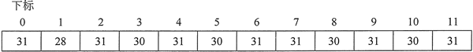
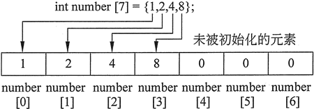

C++数组初始化方法详解
例如，来看一个程序：
#include <iostream> #include <iomanip> using namespace std; int main() { const int NUM_MONTHS = 12; int days[NUM_MONTHS]; days[0] = 31; // January days[1] = 28; // February days[2] = 31; // March days[3] = 30; // April days[4] = 31; // May days[5] = 30; // June days[6] = 31; // July days[7] = 31; // August days[8] = 30; // September days[9] = 31; // October days[10] = 30; // November days[11] = 31; // December for (int month = 0; month < NUM_MONTHS; month++) { cout << "Month "<< setw (2) << (month+1) << " has "; cout << days[month] << " days.\n"; } return 0; }程序输出结果：
Month 1 has 31 days.
Month 2 has 28 days.
Month 3 has 31 days.
Month 4 has 30 days.
Month 5 has 31 days.
Month 6 has 30 days.
Month 7 has 31 days.
Month 8 has 31 days.
Month 9 has 30 days.
Month 10 has 31 days.
Month 11 has 30 days.
Month 12 has 31 days.
int days [NUM_MONTHS] = {31，28，31，30，31，30，31，31，30，31，30, 31};
这些值按照它们出现在列表中的顺序存储在数组元素中（第一个值 31 存储在 days[0] 中，第二个值 28 存储在 days [1] 中，等等）。图 1 显示了初始化后数组的内容。
图 1 通过初始化列表赋值后的数组内容
下面程序是上边程序的修改版。它在创建 days 数组时即对其进行了初始化，而不是使用单独的赋值语句。请注意，初始化列表分散在多行中。该程序还添加了一个 string 对象数组来保存月份名称：
#include <iostream>
#include <iomanip>
#include <string>
using namespace std;
int main()
{
const int NUM_MONTHS = 12;
string name[NUM_MONTHS]={ "January", "February", "March", "April", "May" , "June", "July", "August", "September", "october", "November", "December"};
int days[NUM_MONTHS] = {31, 28, 31, 30, 31, 30, 31, 31, 30, 31, 30, 31};
for (int month = 0; month < NUM_MONTHS; month++)
{
cout << setw(9) << left << name[month] << " has ";
cout << days [month] << " days. \n";
}
return 0;
}
程序输出结果：
January has 31 days.
February has 28 days.
March has 31 days.
April has 30 days.
May has 31 days.
June has 30 days.
July has 31 days.
August has 31 days.
September has 30 days.
october has 31 days.
November has 30 days.
December has 31 days.
#include <iostream>
#include <iomanip>
#include <string>
using namespace std;
int main()
{
const int NUM_MONTHS = 12;
int choice;
string name[NUM_MONTHS]={ "January", "February", "March", "April", "May" , "June", "July", "August", "September", "october", "November", "December"};
int days[NUM_MONTHS] = {31, 28, 31, 30, 31, 30, 31, 31, 30, 31, 30, 31};
cout << "This program will tell you how many days are "<< "in any month.\n\n";
// Display the months
for (int month = 1; month <= NUM_MONTHS; month++)
cout << setw (2) << month << " " << name [month-1] << endl;
cout << "\nEnter the number of the month you want: ";
cin >> choice;
// Use the choice the user entered to get the name of
// the month and its number of days from the arrays.
cout << "The month of " << name [choice-1] << " has " << days[choice-1] << " days.\n";
return 0;
}
程序输出结果为：
This program will tell you how many days are in any month.
1 January
2 February
3 March
4 April
5 May
6 June
7 July
8 August
9 September
10 october
11 November
12 December
Enter the number of the month you want: 4
The month of April has 30 days.
从数组元素1开始
真实世界中存在着大量的逻辑上以 1 开头的事物，在给这样的事物建立模型时，很多教师会偏向于让学生不要使用元素 0，而改为从元素 1 开始存储实际数据。一年中的月份数就是一个很好的例子。在这种情况下，可以声明 name 和 days 数组每个都有 13 个元素，并按以下方式对它们进行初始化：
string name[NUM_MONTHS+1]={" ", "January", "February", "March", "April", "May" , "June", "July", "August", "September", "october", "November", "December"};
int days[NUM_MONTHS+1] = {0, 31, 28, 31, 30, 31, 30, 31, 31, 30, 31, 30, 31};
注意数组元素 0 没有被使用。它只是一个虚拟的值。这样可以将一月份的名称存储在 name[1] 中，二月份的名称将存储在 name[2] 中，以此类推。同样，1 月份的天数将保存在 days[1] 元素中，2 月份的天数将保存在 days[2] 元素中，以此类推。如果使用上述方法定义和初始化数组，则循环应该改写为以下形式。它将显示数组元素 1〜12 的内容，而不是像以前那样显示元素 0〜11。
for (int month = 1; month <= NUM_MONTHS; month++)
{
cout << setw(9) << left << name[month] << " has ";
cout << days[month] << " days.\n";
}
如果实际数据以元素 1 开始存储，那么也不需要将数组下标加 1 来定位特定的数据。以下是列出每个月编号和名称的语句修改：
for (int month = 1; month <= NUM_MONTHS; month++)
cout << setw (2) << month << " " << name [month] << endl;
显示用户所选月份的天数的代码应修改为如下所示。cout << "The month of " << name[choice] << " has "<< days [choice] << " days . \n";
数组部分初始化
当一个数组被初始化时，C++ 并不是必须获得每个元素的值，也可以只初始化数组的一部分，如下所示：int numbers[7] = {1, 2, 4, 8};
这个定义只初始化了一个7元素数组中的前 4 个元素，如图 2 所示。
图 2 数组允许部分初始化
值得一提的是，图 2 中未被初始化的元素将全部被设置为零。这是数字数组部分初始化时发生的情况。当一个 string 对象数组被部分初始化时，未初始化的元素将全部包含空字符串，即长度为 0 的字符串。即使部分初始化的数组在局部定义，也会如此。但是，如果本地数组完全未初始化，则其元素将包含“垃圾”，就像其他局部变量一样。
下面的程序显示了在部分初始化之后的 numbers 数组的内容：
#include <iostream>
using namespace std;
int main ()
{
const int SIZE = 7;
int numbers[SIZE] = {1, 2, 4, 8}; // Initialize the first 4 elements
cout << "Here are the contents of the array: \n";
for (int index = 0; index < SIZE; index++)
cout << numbers [index] << " ";
cout << endl;
return 0;
}
程序输出结果：
Here are the contents of the array:
1 2 4 8 0 0 0
int numbers [7] = {1, 2, 4, 8, 3, 5, 7, 9}; //不合法
另外，如果留下了某个元素未初始化，那么该元素之后的所有元素都应该保留为未初始化。C++ 不提供跳过初始化列表中元素的方法。以下是另一个非法的例子：int numbers [7] = {1, , 4, , 3, 5, 7}; // 不合法
隐式数组大小
可以通过提供一个包含每个元素值的初始化列表来定义一个数组而不指定它的大小。C++ 会计算初始化列表中的项目数，并为数组提供相应数量的元素。例如，以下定义创建 了一个包含5个元素的数组：double ratings [] = {1.0,1.5,2.0,2.5,3.0};
注意，如果省略大小声明符，则必须指定一个初始化列表。否则，C++ 不知道该数组有多大。初始化变量的新方法
到目前为止，已经介绍过的定义和初始化常规变量的方法是使用赋值语句，示例如下：int value = 5；
但是，我们已经学习过使用函数、数组以及类，所以现在是时候来介绍另外两种在定义变量的同时即进行初始化的方法。第一种新方法是使用函数符号初始化变量。它看起来就像是给一个函数传递参数。如果您已经掌握了类的内容，那么就会注意到，它也很像是在创建类对象时给一个构造函数传递值。以下是使用函数符号定义变量 value 并初始化其值为 5 的示例语句：
int value (5);
第二种初始化变量的新方法是 C++ 11 中新引入的，使用大括号表示法。它看起来就像是刚刚上面所看到的初始化数组的方法，但是其中有两点区别：- 因为常规变量只能一次保存一个值，所以通过这种方法初始化变量时，大括号中只有一个值；
- 和数组初始化列表不一样，通过这种方法初始化变量时，在大括号前面没有赋值运算符（=）。
以下是使用大括号表示法定义变量 value 并初始化其值为5的示例语句。
int value{5}; //该语句仅在C++ 11或更高版本中合法
绝大多数程序员会继续使用赋值运算符来初始化常规变量，本书也将如此，但是，大括号表示法提供了一项优点，它会检查用来初始化变量的值，并确保匹配变量的数据类型。例如，假设 doubleVal 是一个 double 类型变量，存储在其中的值为 6.2。则使用赋值运算符时，可以编写以下两种形式的语句之一：int valuel = 4.9； //该语句将给valuel赋值为。4 int vaule2 = doubleVal; // 该语句将给 value2 赋值为 6在这两种情况下，值的小数点部分都会被先截断，然后才赋值给被定义的变量。这虽然可能会导致一些问题，但 C++ 编译器是允许的，它也会提出警告，但却仍然能生成可执行文件，并且可以运行。不过，如果在这里使用的是大括号表示法，则编译器会指出这些语句产生了一个错误，并且不会生成可执行文件。必须先修复该错误，然后重新编译项目才能运行该程序。
关注公众号「站长严长生」，在手机上阅读所有教程，随时随地都能学习。内含一款搜索神器，免费下载全网书籍和视频。

微信扫码关注公众号